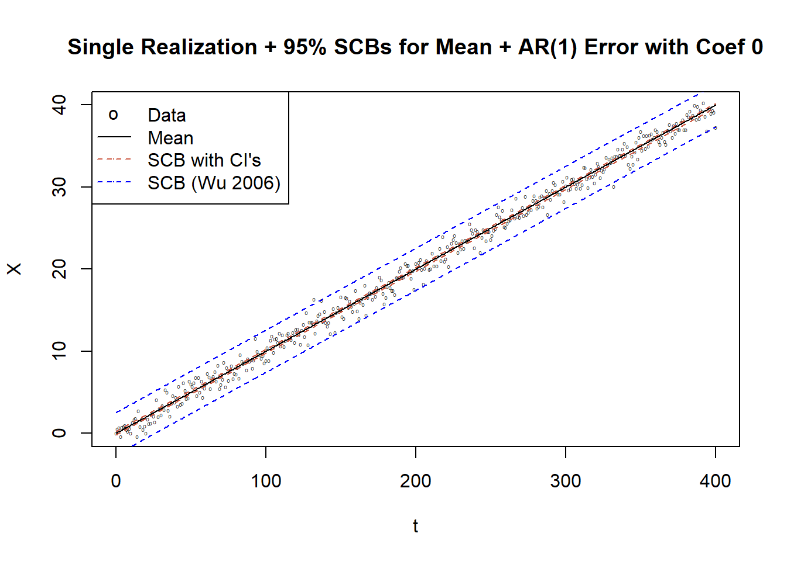
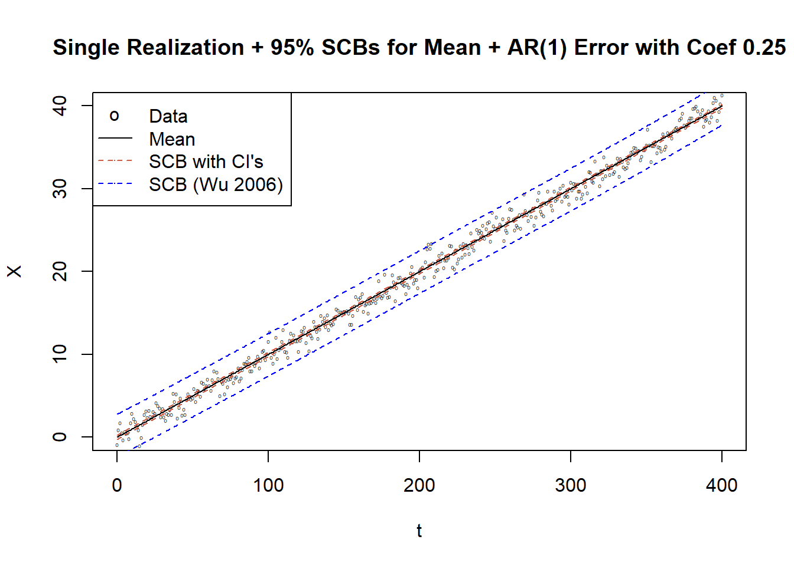
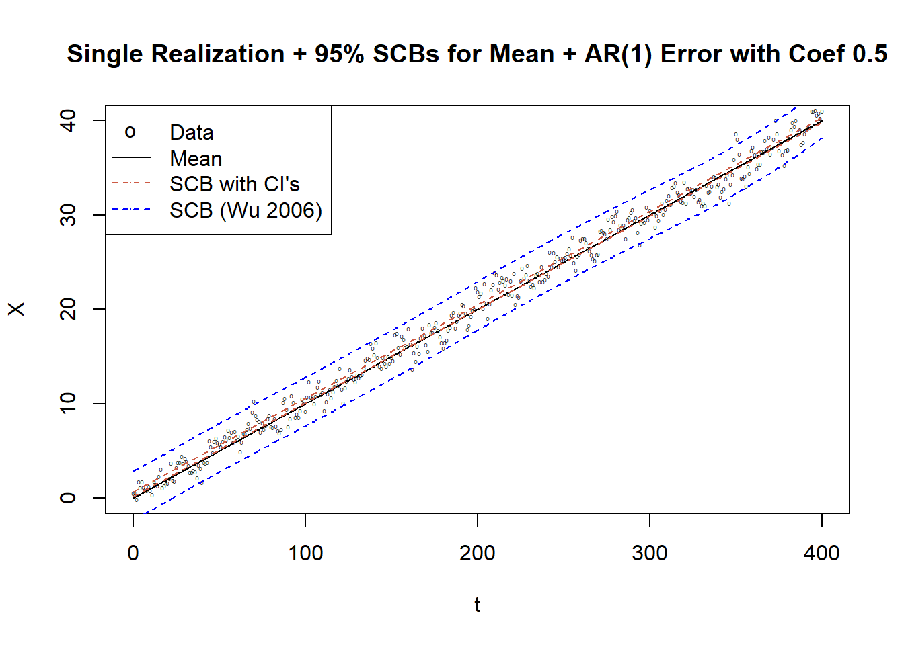
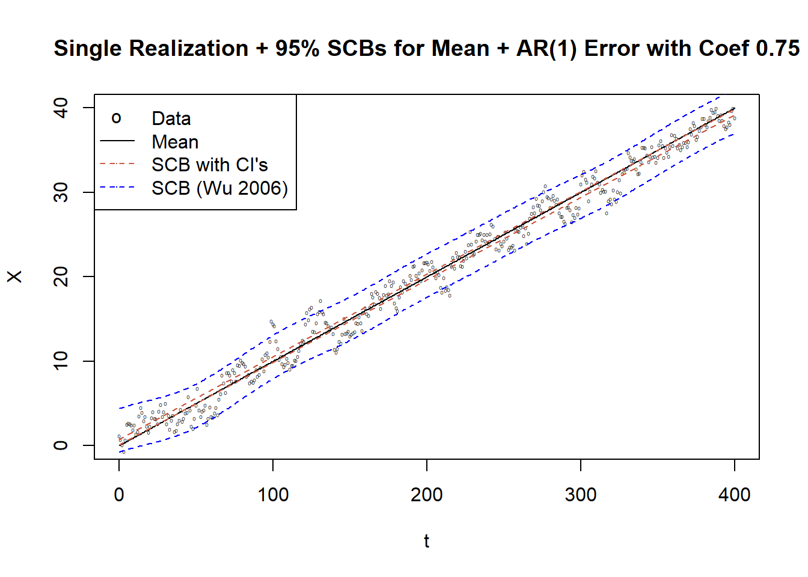

Last updated: 2020-05-06
Checks: 7 0
Knit directory: SCBs_Exploration/
This reproducible R Markdown analysis was created with workflowr (version 1.4.0). The Checks tab describes the reproducibility checks that were applied when the results were created. The Past versions tab lists the development history.
Great! Since the R Markdown file has been committed to the Git repository, you know the exact version of the code that produced these results.
Great job! The global environment was empty. Objects defined in the global environment can affect the analysis in your R Markdown file in unknown ways. For reproduciblity it’s best to always run the code in an empty environment.
The command set.seed(20200222) was run prior to running the code in the R Markdown file. Setting a seed ensures that any results that rely on randomness, e.g. subsampling or permutations, are reproducible.
Great job! Recording the operating system, R version, and package versions is critical for reproducibility.
Nice! There were no cached chunks for this analysis, so you can be confident that you successfully produced the results during this run.
Great job! Using relative paths to the files within your workflowr project makes it easier to run your code on other machines.
Great! You are using Git for version control. Tracking code development and connecting the code version to the results is critical for reproducibility. The version displayed above was the version of the Git repository at the time these results were generated.
Note that you need to be careful to ensure that all relevant files for the analysis have been committed to Git prior to generating the results (you can use wflow_publish or wflow_git_commit). workflowr only checks the R Markdown file, but you know if there are other scripts or data files that it depends on. Below is the status of the Git repository when the results were generated:
Ignored files:
Ignored: .Rhistory
Ignored: analysis/.Rhistory
Untracked files:
Untracked: paper/
Note that any generated files, e.g. HTML, png, CSS, etc., are not included in this status report because it is ok for generated content to have uncommitted changes.
These are the previous versions of the R Markdown and HTML files. If you’ve configured a remote Git repository (see ?wflow_git_remote), click on the hyperlinks in the table below to view them.
| File | Version | Author | Date | Message |
|---|---|---|---|---|
| html | 49f9697 | Adam Sun | 2020-05-02 | Build site. |
| Rmd | d1af1d1 | Adam Sun | 2020-05-02 | Updated SCBs Analysis Code |
| html | 0202920 | Adam Sun | 2020-04-15 | Build site. |
| Rmd | d320b0e | Adam Sun | 2020-04-15 | Simulation Study of SCBs |
| html | a5a17ac | Adam Sun | 2020-04-15 | Build site. |
| Rmd | 69f8b36 | Adam Sun | 2020-04-15 | simulation analysis |
calc_sig_hats_eq25 = function(series, p = 1/3){
k_n = round(length(series)^p)
breaks = c(seq(1, length(series), by = k_n))
m = floor(length(series)/k_n)
A_ms = cbind(idx = seq(1,length(series)), series) %>% as.data.frame() %>%
mutate(m = cut(idx, breaks = breaks, labels = FALSE, include.lowest = TRUE)) %>%
filter(!is.na(m)) %>% # we do not want remainders since not enough for one more interval
group_by(m) %>% summarize(A_m = mean(series)) %>% select(A_m) %>% as.matrix()
q3_norm = qnorm(p = 0.75, 0, 1)
sig_hat_1 = sqrt(pi*k_n)/(2*(m-1))*sum(abs(A_ms - lag(A_ms, 1)), na.rm = TRUE)
sig_hat_2 = sqrt(k_n/(2*q3_norm))*median(abs(A_ms - lag(A_ms, 1)), na.rm = TRUE)
sig_hat_3 = sqrt(k_n/(2*(length(breaks)-1)))*sum((A_ms - lag(A_ms, 1))^2, na.rm = TRUE)^(1/2)
return(list(k_n = k_n, A_ms = A_ms, hat_1 = sig_hat_1, hat_2 = sig_hat_2, hat_3 = sig_hat_3))
}
calc_k_final = function(time_idx, series, sig_hat){
k_ruppert = dpill(x = time_idx, y = series)
b_ruppert = k_ruppert/length(series)
loclin_1 = locpoly(time_idx, series, bandwidth = k_ruppert, gridsize = length(time_idx))
loclin_2 = locpoly(time_idx, series, bandwidth = k_ruppert*sqrt(2), gridsize = length(time_idx))
e_hats = series - (2*loclin_1$y - loclin_2$y)
nu = sum(e_hats^2)/length(series)
rho_hat = sig_hat^2/nu
k_final = 2*(rho_hat)^(1/5)*k_ruppert
return(list(k_final = k_final, e_hats = e_hats, nu = nu, rho_hat = rho_hat))
}
calc_suprem_rnorm = function(rand_iter, time_idx, k_final){
loclin_iter_b_1 = locpoly(x = time_idx, y = rand_iter, bandwidth = k_final, gridsize = length(time_idx))
loclin_iter_b_2 = locpoly(x = time_idx, y = rand_iter, bandwidth = k_final*sqrt(2), gridsize = length(time_idx))
return(mu_suprem = max(abs(2*loclin_iter_b_1$y - loclin_iter_b_2$y)))
}
calc_q95 = function(sup_mus_boot, CI_val = 0.95){
return(quantile(abs(sup_mus_boot), CI_val))
}
calc_coverage = function(time_idx, series, mean_series, q_95, sig_hat, k_final){
interval_95 = q_95*sig_hat
loclin_1 = locpoly(x = time_idx, y = series, bandwidth = k_final, gridsize = length(time_idx))
loclin_2 = locpoly(x = time_idx, y = series, bandwidth = k_final*sqrt(2), gridsize = length(time_idx))
series_tilde = 2*loclin_1$y - loclin_2$y
return(sum(abs(mean_series - series_tilde) > interval_95))
}
calc_mu_tilde = function(time_idx, series, k_final){
loclin_1 = locpoly(x = time_idx, y = series, bandwidth = k_final, gridsize = length(time_idx))
loclin_2 = locpoly(x = time_idx, y = series, bandwidth = k_final*sqrt(2), gridsize = length(time_idx))
series_tilde = 2*loclin_1$y - loclin_2$y
return(series_tilde)
}
calc_SCBs = function(time_idx, series, sup_mus_boot, q_95, sig_hat, k_final){
interval_95 = q_95*sig_hat
series_tilde = calc_mu_tilde(time_idx = time_idx, series = series, k_final = k_final)
temps_UB = series_tilde + interval_95
temps_LB = series_tilde - interval_95
return(list(q_95 = interval_95, loclin_fit = series_tilde, series_UB = temps_UB, series_LB = temps_LB))
}set.seed(9975)
coefs_phi = c(0.0001, 0.25, 0.5, 0.75)
sig_hats_LT_vec = numeric(0)
for (coef in coefs_phi){
sig_hats = numeric(0)
for (iters in 1:10){
e_is = arima.sim(list(order = c(1,0,0), ar = coef), 100000)
sig_hat_iter = round(calc_sig_hats_eq25(e_is, p = 1/3)$hat_3, 3)
sig_hats = c(sig_hats, sig_hat_iter)
}
sig_hat_LT = round(mean(sig_hats), 3)
sig_hats_LT_vec = c(sig_hats_LT_vec, sig_hat_LT)
}
print("LT sigmas of an AR1 series with different phi's")[1] "LT sigmas of an AR1 series with different phi's"sig_hats_LT_vec[1] 1.001 1.319 1.975 3.788t = seq(0, 400)
# mean_Xn = cos(2*pi*t/200)
mean_Xn = 0.1*t
vec_k_rups = numeric()
vec_k_opts = numeric()
for (coef_idx in 1:length(coefs_phi)){
k_rups = numeric()
k_opts = numeric()
for (iters in 1:1000){
e_is_iter = arima.sim(list(order = c(1,0,0), ar = coefs_phi[coef_idx]), length(t))
Xn_sim = mean_Xn + e_is_iter
k_rup = dpill(x = t, y = Xn_sim)
k_opt_results = calc_k_final(t, Xn_sim, sig_hat = sig_hats_LT_vec[coef_idx])
k_opt = k_opt_results$k_final
k_rups = c(k_rups, k_rup)
k_opts = c(k_opts, k_opt)
}
vec_k_rups = c(vec_k_rups, round(mean(k_rups), 2))
vec_k_opts = c(vec_k_opts, round(mean(k_opts), 2))
}
vec_q_95 = numeric()
for (coef_idx in 1:length(coefs_phi)){
num_sims = 1000
rnorm_sims = matrix(rnorm(num_sims*length(t), 0 ,1), nrow = num_sims, ncol = length(t))
sup_mus_boot = apply(rnorm_sims, MARGIN = 1, FUN = calc_suprem_rnorm,
time_idx = t, k_final = vec_k_opts[coef_idx])
q_95 = calc_q95(sup_mus_boot) %>% as.numeric()
vec_q_95 = c(vec_q_95, q_95)
}
print("Estimated 95% quantiles of AR1 series with different phi's")[1] "Estimated 95% quantiles of AR1 series with different phi's"vec_q_95[1] 0.3456426 0.4246320 0.6043470 0.6790202Results:
Under SCBs, we see that the Ruppert bandwidth is 0.02, and the optimal bandwidth is 0.07.
The estimated 95% quantile \(\hat q_{95}\) for a stationary AR(1) series is 0.68.
Results:
We see that the 95% SCB has better nominal coverage of 95%.
When errors are iid, all results match up pretty closely. But when the errors are not actually iid, finding the nominal 95% confidence interval under OLS assumptions causes the interval to have coverage less than 95%.
When looking at the bias calculations of the 95% SCB vs. 95% CI, we see that there is higher bias with SCB than with the CI. This could partially be due to how SCB vs OLS CI are generated. Also, applyling strict paramterized model for OLS makes for potentially better coverage to some extent most of the time, but also potentially bad coverage if data is randomized in such a way that model is not that accurate. Can be observed by looking at the summary of coverages and noting how large the range is for OLS vs SCB.

| Version | Author | Date |
|---|---|---|
| 49f9697 | Adam Sun | 2020-05-02 |

| Version | Author | Date |
|---|---|---|
| 49f9697 | Adam Sun | 2020-05-02 |

| Version | Author | Date |
|---|---|---|
| 49f9697 | Adam Sun | 2020-05-02 |

| Version | Author | Date |
|---|---|---|
| 49f9697 | Adam Sun | 2020-05-02 |
AR_Coef Pointwise CI SCB CI SCBs (Wu 2006)
1 0.00 0.9500 0.9501 0.9503
2 0.25 0.8683 0.8519 0.9426
3 0.50 0.7427 0.6713 0.9573
4 0.75 0.5375 0.3929 0.9581This is for a proof of concept.
The SCBs should be close to the nominal 95% coverage (i.e. optimal) under the assumption that the error terms follow a stationary process.
We let our error term be an AR1 series, with \(\phi_1 = 0.5\). Thus, our model is \(e_n = 0.5e_{n-1} + \epsilon_n\).
The variance of our AR1 model is \(\frac{1}{1-.5^2} = \frac{4}{3}\). This is because \(Var(e_n)\) can be re-written as \(E(.5e_{n-1} + \epsilon_n, .5e_{n-1} + \epsilon_n) = .5^2Var(e_{n-1}) + 1\), since \(\epsilon_i's \sim i.i.d. N(0,1)\).
\(e_n\) being stationary implies we can re-write the equation as \(\hat\gamma_0(1-.5^2) = 1 \rightarrow \hat\gamma_0 = \frac{1}{.75}\).
For an AR1 model with finite length, we estimate the long-term variance with a length 10^6 AR1 series.
To test coverage, we set the underlying mean series \(\mu_t = cos(2 \pi t)\) and generate normalized AR1 errors to get 10^4 realizations of \(X_n\).
We simulate \(t\ in [0,2]\) at intervals of 1/200 (i.e. two full cycles).
We follow Section 4 step (b) to adjust the automatic bandwidth selected under Ruppert (i.e. dpill function in R) to the optimal banwidth that would cover the mean series 95% of the time, denoted \(b_{opt}\).
To confirm this bandwidth is most representative of the nominal 95% coverage, we calculate coverage rates with bandwidths \(\frac{3}{5}b_{opt}\), \(\frac{4}{5}b_{opt}\), \(\frac{5}{4} b_{opt}\), and \(\frac{6}{4} b_{opt}\) as well for comparison,
set.seed(9999)
sig_hats = numeric()
for (iters in 1:1){
e_is = arima.sim(list(order = c(1,0,0), ar = 0.5), 100000)
sig_hat_LT = round(calc_sig_hats_eq25(e_is, p = 1/3)$hat_3, 3)
sig_hats = c(sig_hats, sig_hat_LT)
}
sig_hat_LT = round(mean(sig_hats), 3)
print("long-run variance of AR(1) process with coef 0.5")[1] "long-run variance of AR(1) process with coef 0.5"sig_hat_LT[1] 1.928t = seq(0, 400)
mean_Xn = cos(2*pi*t/200)
vec_k_rups = numeric()
vec_k_opts = numeric()
vec_rho_hats = numeric()
for (iters in 1:1000){
e_is_iter = arima.sim(list(order = c(1,0,0), ar = 0.5), length(t))
Xn_sim = cos(2*pi*t/200) + e_is_iter
# Xn_sim = e_is_iter
k_rup = dpill(x = t, y = Xn_sim)
k_opt_results = calc_k_final(t, Xn_sim, sig_hat = sig_hat_LT)
k_opt = k_opt_results$k_final
vec_k_rups = c(vec_k_rups, k_rup)
vec_k_opts = c(vec_k_opts, k_opt)
vec_rho_hats = c(vec_rho_hats, round(k_opt_results$rho_hat, 3))
}
k_rup = round(mean(vec_k_rups), 2)
b_rup = round(k_rup/length(t), 3)
k_opt = round(mean(vec_k_opts), 2)
b_opt = round(k_opt/length(t), 3)
k_lo1 = round(k_opt*0.6, 2)
k_lo2 = round(k_opt*0.8, 2)
k_hi1 = round(k_opt*1.2, 2)
k_hi2 = round(k_opt*1.4, 2)
print("optimal bandwidth length k")[1] "optimal bandwidth length k"k_opt[1] 23.84print("otimal bandwidth")[1] "otimal bandwidth"b_opt[1] 0.059df_ar1_scbs = data.frame(b = numeric(), q_95 = numeric(), coverage = numeric(), bias = numeric())
q_95_vec = numeric()
num_sims = 10000
for (k_val in c(k_lo1, k_lo2, k_opt, k_hi1, k_hi2)){
# for (k_val in c(k_lo2, k_opt, k_hi1)){
rnorm_sims = matrix(rnorm(num_sims*length(t), 0 ,1),
nrow = num_sims, ncol = length(t))
sup_mus_boot = apply(rnorm_sims, MARGIN = 1, FUN = calc_suprem_rnorm,
time_idx = t, k_final = k_val)
q_95 = calc_q95(sup_mus_boot)
q_95_vec = c(q_95_vec, q_95)
}
# calculate empirical coverages under different optimal bandwidths
for (idx in 1:5){
# for (idx in 1:3){
k_val = c(k_lo1, k_lo2, k_opt, k_hi1, k_hi2)[idx]
# k_val = c(k_lo2, k_opt, k_hi1)[idx]
q_95 = q_95_vec[idx]
num_reps = 10000
coverages = numeric(0)
mu_tildes = vector("list", length = num_reps)
for (iters in 1:num_reps){
e_is = arima.sim(list(order = c(1,0,0), ar = 0.5), length(t))
Xn_sim = cos(2*pi*t/200) + e_is
mu_tildes[[iters]] = calc_mu_tilde(time_idx = t, Xn_sim, k_final = k_val)
coverages = c(coverages,
calc_coverage(t, series = Xn_sim, mean_series = mean_Xn, q_95, sig_hat = sig_hat_LT, k_val))
}
coverage_pct = length(which(coverages == 0))/length(coverages)
bias_calc = max(abs(apply(bind_cols(mu_tildes), MARGIN = 1, mean) - mean_Xn))
df_ar1_scbs = rbind(df_ar1_scbs, round(c(k_val/length(t), q_95, coverage_pct, bias_calc), 3))
}
colnames(df_ar1_scbs) = c("b", "q_95", "coverage", "bias")
df_ar1_scbs %>% kable()| b | q_95 | coverage | bias |
|---|---|---|---|
| 0.036 | 0.986 | 0.966 | 0.038 |
| 0.048 | 0.830 | 0.957 | 0.060 |
| 0.059 | 0.743 | 0.946 | 0.112 |
| 0.071 | 0.679 | 0.936 | 0.167 |
| 0.083 | 0.628 | 0.913 | 0.269 |
Results: Under the automatic bandwidth selector by Ruppert which minimizes MSE for iid errors, the optimal bandwidth is 0.023. The optimal bandwidth adjusted is 0.059.
The adjustment uses a variance correction factor of \(\hat\rho\) = 3.593 to get \(b_{opt}\) = \(2\hat\rho^{1/5} \cdot b_{rup}\).
We bootstrap normal errors (with 10^4 repetitions) to estimate the 95% quantile \(\hat q_{0.95}\) for each bandwdith.
We also use 10^4 repetitions of the series to calculate the bias and empirical coverage rates.
The results indicate that our optimal bandwidth generally matches most closely with our nominal 95% coverage. Shorter bandwidths give us higher than 95% coverage, while longer bandwidths give us lower than 95% coverage.
| b_desc | b | q_95 | coverage | bias |
|---|---|---|---|---|
| 0.60 x b_opt | 0.036 | 0.986 | 0.966 | 0.038 |
| 0.80 x b_opt | 0.048 | 0.830 | 0.957 | 0.060 |
| 1.00 x b_opt | 0.059 | 0.743 | 0.946 | 0.112 |
| 1.25 x b_opt | 0.071 | 0.679 | 0.936 | 0.167 |
| 1.50 x b_opt | 0.083 | 0.628 | 0.913 | 0.269 |
We replicate the setup of the error structure in Section 6 to see if we can replicate similar results seen in Table 2.
We select a range of values of \(\theta \in c(0.0, 0.1, 0.2, 0.3, 0.4, 0.5, 0.6, 0.7, 0.8, 0.9)\) and estimate the long-run standard deviation \(\hat\sigma(\theta)\) by generating series with length of 10^4.
Our estimated long-run standard deviations tie out with Table 1.
We note that the 1st and 3rd methods of calculating \(\sigma_1\) and \(\sigma_3\) are similar, while \(\sigma_2\) is considerably smaller. As suggested by the paper and its calculation, \(\sigma_2\) is more robust to jumps in the mean series (since it relies on calculating the median), but when jumps are not present in the series as is the case with \(X_n = cos(2\pi n)\), \(\sigma_1\) and \(\sigma_3\) are more accurate.
Table of estimated long-run SDs \(\hat\sigma(\theta)\):
| 0 | 0.1 | 0.2 | 0.3 | 0.4 | 0.5 | 0.6 | 0.7 | 0.8 | 0.9 |
|---|---|---|---|---|---|---|---|---|---|
| 0.999 | 1.005 | 1.007 | 1.037 | 1.06 | 1.105 | 1.176 | 1.278 | 1.448 | 1.826 |
In order to see how non-linearity and bandwidth length affect the coverage, we select range of values for the bandwidth \(b_{test} \in c(0.01, 0.02, 0.03, 0.04, 0.05, 0.06, 0.07, 0.08, 0.10, 0.11, 0.12, 0.14, 0.17, 0.20)\) and use 10^4 repetitions to bootstrap the 95% CI interval \(q_95\).
After, we use 10^4 repetitions to bootstrap the \(\hat q(b)\) estimate for each bandwidth.
Using these \(\hat q\), we generate 10^4 realizations of the series to calculate the emperical coverage rate.
For each \(b_{test}\), we also calculate the bias with 10^4 realizations of the series. Our estimated long-run standard deviations tie out with Table 1.
Time difference of 31 mins[1] "optimal bandwidth length and bandwidth"[1] 13.000 0.065Table of coverage rates over bandwidth and \(\theta\) grid:
df_results_scbs_final %>% spread(key = theta, value = coverage) %>%
kable(caption = "Table of coverage rates over bandwidth and theta grid:") | b | q_95 | bias | 0 | 0.1 | 0.2 | 0.3 | 0.4 | 0.5 | 0.6 | 0.7 | 0.8 | 0.9 |
|---|---|---|---|---|---|---|---|---|---|---|---|---|
| 0.02 | 1.900 | 0.015 | 0.950 | 0.950 | 0.955 | 0.958 | 0.967 | 0.971 | 0.978 | 0.983 | 0.994 | 0.999 |
| 0.04 | 1.283 | 0.019 | 0.949 | 0.947 | 0.945 | 0.951 | 0.954 | 0.957 | 0.959 | 0.970 | 0.980 | 0.989 |
| 0.06 | 1.043 | 0.031 | 0.952 | 0.947 | 0.950 | 0.952 | 0.954 | 0.953 | 0.957 | 0.961 | 0.960 | 0.980 |
| 0.08 | 0.920 | 0.043 | 0.951 | 0.948 | 0.955 | 0.954 | 0.954 | 0.959 | 0.955 | 0.959 | 0.959 | 0.969 |
| 0.10 | 0.822 | 0.061 | 0.948 | 0.946 | 0.945 | 0.951 | 0.952 | 0.951 | 0.949 | 0.951 | 0.948 | 0.957 |
| 0.12 | 0.742 | 0.110 | 0.933 | 0.934 | 0.941 | 0.946 | 0.934 | 0.934 | 0.937 | 0.930 | 0.932 | 0.927 |
| 0.13 | 0.715 | 0.141 | 0.928 | 0.931 | 0.920 | 0.927 | 0.936 | 0.926 | 0.926 | 0.925 | 0.919 | 0.921 |
| 0.14 | 0.688 | 0.167 | 0.899 | 0.908 | 0.907 | 0.913 | 0.902 | 0.909 | 0.911 | 0.900 | 0.908 | 0.906 |
| 0.15 | 0.668 | 0.208 | 0.890 | 0.882 | 0.888 | 0.894 | 0.885 | 0.887 | 0.885 | 0.888 | 0.889 | 0.879 |
| 0.16 | 0.644 | 0.243 | 0.844 | 0.849 | 0.847 | 0.855 | 0.851 | 0.850 | 0.866 | 0.863 | 0.859 | 0.853 |
| 0.17 | 0.631 | 0.277 | 0.821 | 0.801 | 0.817 | 0.824 | 0.811 | 0.824 | 0.836 | 0.836 | 0.832 | 0.824 |
| 0.18 | 0.611 | 0.315 | 0.752 | 0.763 | 0.757 | 0.767 | 0.760 | 0.769 | 0.776 | 0.785 | 0.784 | 0.783 |
| 0.19 | 0.588 | 0.339 | 0.691 | 0.683 | 0.698 | 0.702 | 0.713 | 0.721 | 0.721 | 0.725 | 0.715 | 0.721 |
| 0.20 | 0.576 | 0.367 | 0.624 | 0.633 | 0.643 | 0.642 | 0.659 | 0.660 | 0.658 | 0.672 | 0.674 | 0.677 |
df_results_scbs_final %>% spread(key = theta, value = coverage) %>% ViewResults:
Our results tie out closely with Table 2 of Wu’s paper.
Under the automatic bandwidth selector by Ruppert which minimizes MSE for iid errors, the optimal bandwidth is 0.065. The optimal bandwidth adjusted is 0.065. Under this bandwidth, the empirical coverage rates range from 0.949 to 0.955 for \(\theta\) up to 0.5, indicating that the empirical coveraage is well-maintained.
However, as \(\theta\) increase, we would need to select larger bandwidths for ensure a valid 95% approximation, as indicated by the columns for \(\theta =\) 0.8 or 0.9 where the 95% nominal coverage is not achieved until b = 0.10.
However, larger bandwidthss do come at the cost of higher bias, which consequently decreases the empirical coverage rate. This is observed by looking at the range of coverage rates across \(\theta\) for b > 0.12 – the empirical coverage rate drops off steeply to less than 70%, with bias increasing to almost 0.4, which is 20% in magnitude of the range of values the mean cosine series can take.
This suggsts that, in practice, maybe we should try to produce SCBs with bandwidths smaller than 0.15, even if the optimal bandwidth selector estimates a larger bandwidth.
Below, we study how simultaneous coverage bands for SCBs with a different nominal coverage (75%)
Process is the same, except now we use 10^4 repetitions to bootstrap the 75% CI interval \(q_{75}\).
Table of coverage rates over bandwidth and \(\theta\) grid:
sessionInfo()R version 3.5.1 (2018-07-02)
Platform: x86_64-w64-mingw32/x64 (64-bit)
Running under: Windows 10 x64 (build 18362)
Matrix products: default
locale:
[1] LC_COLLATE=English_United States.1252
[2] LC_CTYPE=English_United States.1252
[3] LC_MONETARY=English_United States.1252
[4] LC_NUMERIC=C
[5] LC_TIME=English_United States.1252
attached base packages:
[1] stats graphics grDevices utils datasets methods base
other attached packages:
[1] KernSmooth_2.23-16 forecast_8.9 fracdiff_1.4-2
[4] tseries_0.10-47 scales_1.0.0 forcats_0.3.0
[7] stringr_1.4.0 dplyr_0.8.0.1 purrr_0.3.2
[10] readr_1.1.1 tidyr_0.8.1 tibble_2.1.3
[13] ggplot2_3.2.1 tidyverse_1.2.1 astsa_1.9
[16] knitr_1.20
loaded via a namespace (and not attached):
[1] zoo_1.8-5 tidyselect_0.2.5 urca_1.3-0
[4] haven_1.1.2 lattice_0.20-35 colorspace_1.4-1
[7] htmltools_0.3.6 yaml_2.2.0 rlang_0.4.0
[10] pillar_1.4.2 glue_1.3.1 withr_2.1.2
[13] TTR_0.23-5 modelr_0.1.2 readxl_1.1.0
[16] quantmod_0.4-15 timeDate_3043.102 munsell_0.5.0
[19] gtable_0.3.0 workflowr_1.4.0 cellranger_1.1.0
[22] rvest_0.3.2 evaluate_0.11 lmtest_0.9-37
[25] parallel_3.5.1 curl_3.2 highr_0.7
[28] broom_0.5.0 xts_0.11-2 Rcpp_1.0.2
[31] backports_1.1.5 jsonlite_1.5 fs_1.2.6
[34] hms_0.4.2 digest_0.6.21 stringi_1.4.3
[37] grid_3.5.1 rprojroot_1.3-2 quadprog_1.5-8
[40] cli_1.1.0 tools_3.5.1 magrittr_1.5
[43] lazyeval_0.2.2 crayon_1.3.4 whisker_0.3-2
[46] pkgconfig_2.0.3 xml2_1.2.0 lubridate_1.7.4
[49] assertthat_0.2.1 rmarkdown_1.10 httr_1.3.1
[52] rstudioapi_0.8 R6_2.4.0 nnet_7.3-12
[55] nlme_3.1-137 git2r_0.25.2 compiler_3.5.1